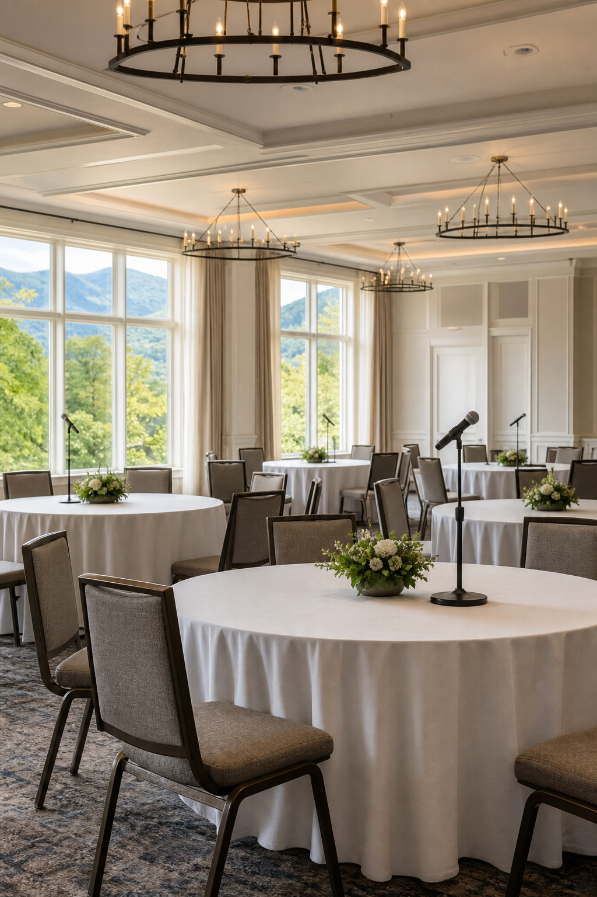
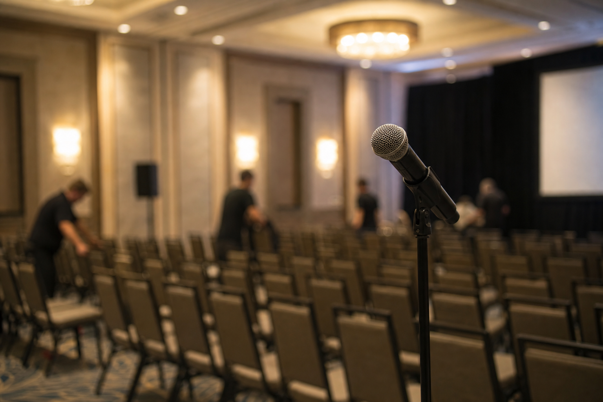

Four breakout rooms. One plenary. Forty people trying to find their next chair while the main stage needs to be live in twelve minutes.
Breakouts aren't a gear problem first. They're a logistics problem with mics and timers attached.
Before doors
- Name a captain per room (crew or volunteer with a radio)
- Print a one-page schedule with room numbers and end times
- Preset mics and playback so sessions start without a hunt
- Agree on the return signal: 5 / 3 / 1 minute warnings that everyone uses

During sessions
Captains watch the clock, not the content. When time's up, they stop audio cleanly — no fading someone out mid-sentence if you can avoid it — and point people toward the plenary path.

Getting the room back
Walk-in music or a lighting change in the main room helps more than a shouted announcement. Soft goods and chairs don't reset themselves; build reset time into the agenda or keep breakouts in rooms that don't need a full flip.
When something slips
- One room runs long: cut that room's Q&A, don't punish the whole schedule
- A mic dies: spare handheld on the captain, not a sprint to FOH
- People get lost: signage and a human at the fork beat another slide on the main screen
The goal is simple: when guests sit down for the next plenary, they shouldn't feel the scramble that made it possible.
Running breakouts on your next event?
If you're running multiple rooms, we'll help you plan the transitions so the audience never feels the logistics.
Start a project